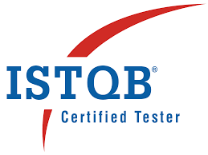
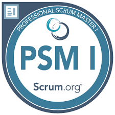

Je suis Lydia Lounas, testeuse logiciel / QA, avec une forte orientation tests fonctionnels et une bonne compréhension des enjeux métiers et techniques. Au cours de mon parcours, j’ai travaillé sur des applications et portails métiers nécessitant rigueur, fiabilité et attention aux détails. J’interviens sur l’analyse des exigences, la rédaction et l’exécution des cas de test, la recette fonctionnelle, la gestion des anomalies et le suivi de la qualité jusqu’à la mise en production. J’accorde une importance particulière à la non-régression, à la cohérence des données et à la sécurité des parcours utilisateurs. Habituée à travailler en collaboration avec les équipes produit et techniques, je sais m’adapter à différents contextes (méthodes agiles, outils de suivi, environnements d’intégration et de recette) et communiquer de manière claire et constructive. Curieuse et motivée par l’amélioration continue, je développe progressivement mes compétences en automatisation des tests afin de compléter mon profil fonctionnel et d’élargir mon champ d’intervention. Mon objectif est de rejoindre une équipe où je pourrai contribuer activement à la qualité des produits, à la fiabilité des livraisons et à la satisfaction des utilisateurs.